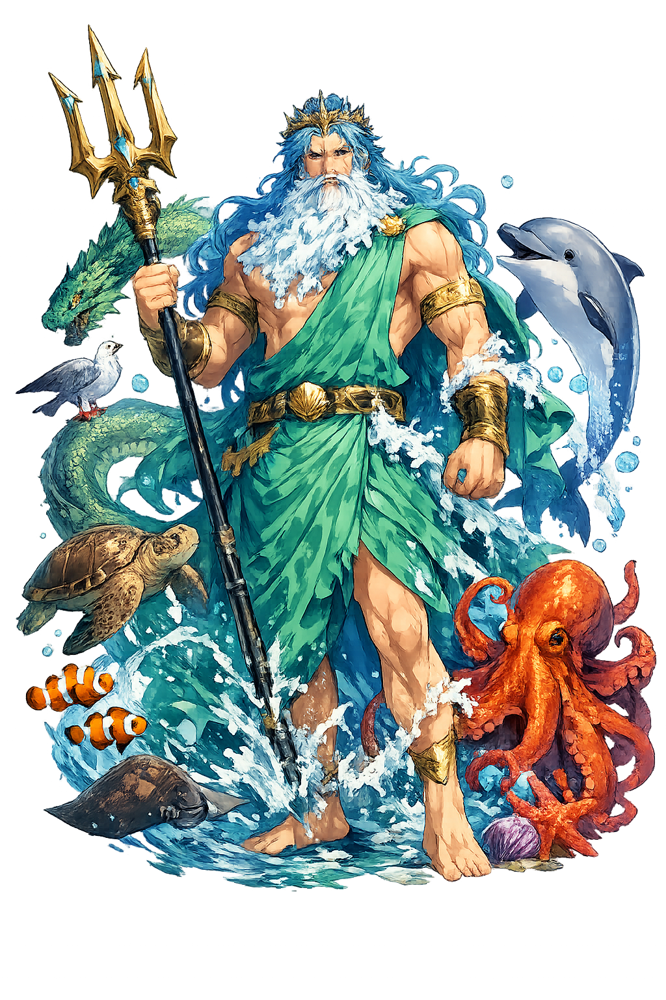

The Authentic Orthography
Sea, Horses, Earthquake · Possibly related to nepos (descendant) or a pre-Roman water root

Unicode restoration and ASCII comparison
Neptūnus
The name survives only in scholarly transliteration. Neptūnus is the standard Roman romanisation, documented in academic sources — “Possibly related to nepos (descendant) or a pre-Roman water root”. Its macron-length vowels preserve distinctions lost in plain ASCII.
The original script for this roman name has not yet been added to PUNICODEX. The form shown is a scholarly transliteration.
neptunus
Reduced to plain neptunus, the name loses everything that made it specific: macron-length vowels. What remains is an ASCII string that machines can parse but that no longer speaks with its original voice.
Neptūnus
The Unicode restoration recovers what ASCII flattened. Neptūnus restores macron-length vowels, returning the name to its original written dignity. The domain encodes to Punycode, but the browser displays the truth.
Neptūnus.com → xn--neptnus-3sb.com
The non-ASCII characters in Neptūnus are encoded while the ASCII remains visible. To the DNS, it is Punycode. To humanity, it is Neptūnus.
How Neptūnus is preserved in writing
A bespoke provenance study for Neptūnus is being prepared by the PUNICODEX scholarly team.
Contribute scholarly provenance →How Neptūnus was spoken
Sea, Horses, Earthquakes, and the Drought Festival
Neptūnus was god of fresh water before he was god of the sea: his oldest festival, the Neptunalia, falls in the parching days of late July, when Romans built huts of branches and prayed the waters not to fail. The Greek sea came later, and with it Poseidṓn's whole mythology.
The three-pronged fisher's spear that became the sceptre of the sea — and of a planet.
His Roman title as horse-lord: the consus-cult of underground granaries and racing.
Ennosigaios in Greek, but Rome knew him too — the power that moves the ground the city stands on.
July 23: arbours of woven branches, water rites at the height of the drought.
Stories of Neptūnus
Rome gave Neptūnus few native myths — his biography is Poseidṓn's translated — but the festival and the horse-cult are Italy's own, older than the sea-borrowing.
The Neptunalia of July 23 is Rome's oldest water rite: families built umbrae — huts woven of leafy branches — and poured water offerings at the height of summer's drought. The god's first realm was the spring and the stream, the waters that keep a farm alive; the Mediterranean, with its trade and war, was the empire's later gift to him.
As Neptunus Equester he shared the underground altar of Consus, god of stored grain, at whose games — the Consualia — horses and mules were garlanded and rested from labour. It was at one such festival that Romulus staged the seizure of the Sabine women: Rome's foundation story begins at Neptūnus' racetrack, with the horses watching.
Roman retellings kept the Greek contest for Athens: Neptūnus struck the Acropolis with his trident and brought forth the salt spring — or the first horse — but Minerva's olive won the city's name. The myth explained, for Roman readers, why wisdom outranks force: a civic lesson the conquerors of the Mediterranean repeated against themselves.
When Agrippa destroyed Sextus Pompeius' fleet at Naulochus in 36 BCE, the victory was dedicated to Neptune — and the poet Horace marked the sea-god's favour to the Julian cause. Roman sea-power, relatively late in coming, made the borrowed god genuinely Roman: by the empire, Neptūnus had sailors' cults from Ostia to the British coast.
Neptūnus began as the water that must be prayed for and became the water that must be crossed. He holds both truths: the sea that feeds and the sea that swallows, the spring in the drought and the earthquake under the harbour. To sail, to drill a well, to trust the ground — each is a small treaty with him.
Enter Extended Lore